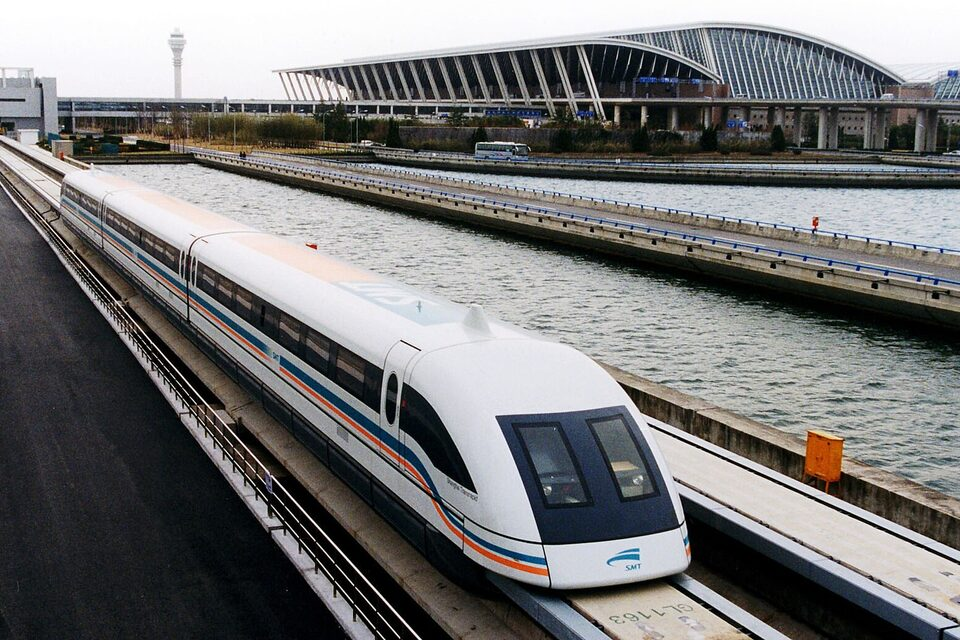
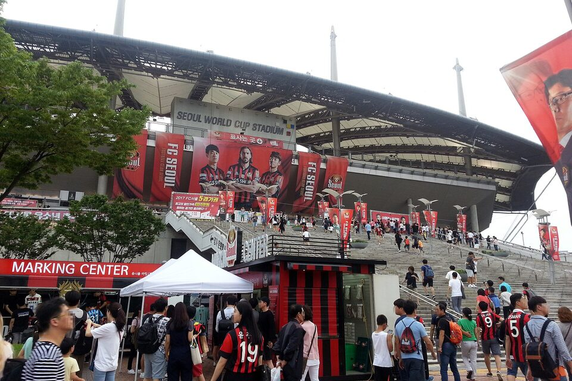
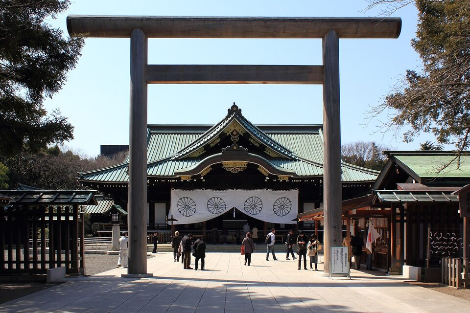

Unit 19 · Study guide · Capstone
East Asia in the 21st Century 東亞
Closer ties, shared culture, and unresolved disputes across China, Japan, the Koreas, and Taiwan
ContentsOverview
The unit in one paragraph
pp. 540–544
The countries of East Asia are now more closely connected than ever. Businesspeople, students, workers, and tourists move constantly between them; pop culture such as the Korea wave, manga, and anime crosses borders; and China's double-digit growth has pulled its neighbors into deep economic interdependence. Yet the region still faces serious problems: corruption in democracies and communist states alike, collapsing birth rates and aging populations, bitter memories of World War II, China's growing military and political weight, and North Korea's nuclear weapons. South Korea, Taiwan, and Japan stand at a crossroads: they rely on the United States for security but increasingly on China for prosperity. pp. 540–544
The essay ties together threads from the whole course: Japan's wartime record (Unit 14), the division of Korea and its two paths (Unit 16), Japan's boom and long recession (Unit 17), and China's reform era (Unit 18). As you read, ask which forces pull the region together and which keep it apart.
Timeline at a glance
A more connected region
p. 540
Hundreds of thousands of Korean, Taiwanese, and Japanese businesspeople live in China to run the factories their companies have placed there, flying home regularly. Thousands of Chinese live in Japan, some as students or businesspeople, others as laborers, often illegally. Cheap phone calls, e-mail, and the Internet let travelers stay in touch with home, so today's diasporas differ from the immigrant communities of earlier times. p. 540
Tourism
For two decades Japanese, Korean, and Taiwanese tourists have visited China, often on package tours. Now Chinese who prospered in the reform era are visiting nearby countries in growing numbers.
Music and TV
Popular and classical music ignore national borders; singers have fans across the region, adding to the huge popularity of karaoke. Popular TV serials are dubbed for other East Asian audiences.
The Korea wave
The soap opera Winter Sonata made its star Bae Yong Jun so popular that fans mobbed him in Japan; the craze reached as far as Uzbekistan and Egypt. In China, "Korea" came to mean stylish, and the Seoul sitcom The Marrying Type sold on pirated DVDs.
Cooperation and competition
One film project split the work three ways: Japanese script and direction, South Korean 3-D graphics, animation in Shanghai. A Japanese wedding company exports Japanese-style weddings to Shanghai.
Young Japanese study Korean and Chinese. Chinese is as popular in Korea as English is in China. Japanese is studied across the region too, but with less enthusiasm because of Japan's wartime legacy (Unit 14).
Technology and the Internet
pp. 540–541
East Asia has leaped to the forefront of electronic technology. In China, cell phones and fiber optics lowered the cost of phone service and transmission. p. 540
China: research hub
Microsoft opened a research lab in Beijing's Haidian District, home to some 810,000 Chinese scientists and engineers. Oracle, Motorola, Siemens, IBM, Intel, General Electric, and Nokia also run research centers in China, opening doors for young Chinese researchers. At the 2010 Shanghai World Expo, a maglev train carried visitors from the airport at up to 270 mph.
China: Internet controls
Aware that open contact with the world threatens the regime, the leadership makes website operators enforce bans on rumors, libel, subversion, threats to national security, cults and "feudal superstition," pornography, violence, and gambling. Meanwhile foreign films, pop songs, and chain stores from Japan, South Korea, and the United States pour in. Whether the leaders are right to fear their liberalizing effect remains to be seen.
The two Koreas
In the South nearly everyone, especially teenagers, has a cell phone, a computer, and Internet access; Korean directors, producers, and actors have won international fame; thousands of students study in the United States, and interest in China is growing fast. North Korea has tried to shut out the communications revolution, but the Internet has already cracked open a window on the outside world.
Japan: pop culture as an export
Manga, video games, anime, designer clothing, pop music, dance steps, and accessories have become a major export industry. Japan leads in new electronics designed for the young, creating jobs outside the rigid hierarchies of big business.

Global and American culture
p. 541
Signs of American culture are everywhere in East Asia. McDonald's, Burger King, KFC, and Starbucks operate in cities of any size; American and European designer boutiques fill floors of department stores; and Walmart has built big-box stores across China, more than 350 by the end of 2011. American teenage clothing and music styles are everywhere. p. 541
Baseball and basketball are played across the region. Japanese and Korean players joined American major-league teams; the 7-foot-6 Yao Ming played for the Houston Rockets until repeated fractures forced him to retire in 2011.
South Korea and Japan jointly hosted the 2002 World Cup; Beijing hosted the 2008 Summer Olympics.
Whatever the political differences, cultural convergence, with national variations, has gone too far to be stopped.

Democracy and its problems
pp. 541–542
Japan, South Korea, and Taiwan are democracies with freely elected governments, but that has not spared them political problems. The chief one is corruption: businessmen offer bribes and kickbacks to advance their companies. Corruption is growing in China and North Korea too, despite well-publicized executions of party officials. The Kim family is notorious for living lavishly, and grandchildren of China's revolutionary elite have gained notoriety for breaking the law. p. 541
China and North Korea
The Chinese and Korean communist parties rule in the people's name, but their officials are often as unresponsive as the Japanese bureaucrats behind the pension scandals. pp. 541–542
Japan
The middle class's most pressing concern is the scandals surrounding the pension system, created by unresponsive bureaucrats. p. 542
South Korea
Parties have no staying power: they are leader–follower groups whose members switch parties. Even the most liberal government refused to repeal the National Security Law from the dictatorship era (Unit 16). p. 542
Taiwan
A candidate backed by native Taiwanese in the independence movement won the presidency in 2000; after 2008 voters backed politicians who promised economic gains from close ties with the mainland (Unit 18). p. 542
Economic interdependence
p. 542
The 1990s were hard for East Asian economies, but China's double-digit growth then lifted South Korea, Taiwan, and Japan. The Chinese boom pulled Japan out of a fifteen-year recession (Unit 17) before the 2011 earthquake, and helped South Korea recover from the Asian financial crisis. Korean and Japanese firms want China's consumers and labor; China welcomes all the foreign investment it can get. p. 542
New Japanese prime ministers make their first foreign visit to China, not the United States. At a 2012 summit, the leaders of China, South Korea, and Japan called for closer economic ties and a free trade zone. As one Beijing professor of international affairs, Huang Dahui, put it, real integration is impossible "without Sino-Japanese cooperation." p. 542
For the United States, buying Chinese goods is the largest contributor to its trade deficit, and China is also the largest buyer of U.S. national debt. The authors expect China eventually to prefer spending its surplus at home on infrastructure: roads, railways, education.
China's growing pains
p. 542
China now shows many problems Japan and South Korea faced earlier (Unit 16, Unit 17). p. 542
- 1Finance. Bad loans the state forced banks to make to insolvent companies; collusion and corruption between bureaucrats and businessmen; a huge housing bubble; and inefficient state-owned enterprises that serve as a substitute for welfare payments to workers.
- 2Intellectual property. China is notorious for ignoring international copyright law and stealing trade and manufacturing secrets; now private Chinese firms complain that state enterprises steal their technology.
- 3Inequality. Gaps are growing between rich and poor, the booming coast and the backward interior, and skilled and unskilled workers. Millions of underemployed and homeless migrants fill urban slums; worker strikes are met with repression.
- 4Safety and pollution. Coal-mine owners ignore safety measures; brick-factory owners have kidnapped children for slave labor; poor quality control is an international scandal. Industrial pollution may kill up to 750,000 Chinese a year, and China now emits more greenhouse gases than the United States. Leaders seek help from Japanese technology and foreign pressure.
Obstacles to a regional trade bloc
p. 542
A free trade bloc like the European community faces serious obstacles, because each country has something to gain and something to fear. p. 542
| Country | Stands to gain | Holds it back |
|---|---|---|
| China | The most, from unrestrained trade: highest growth, huge population, low wages | Its advantage lasts only until wages rise |
| North Korea | Needs Chinese aid while its economy stagnates | Intense nationalism resists domination by any foreign economy |
| South Korea | Business is moving factories to China | The public fears losing industry and economic decline |
| Japan | High-tech exports and factories in China | Chinese resentment of wartime atrocities, the U.S. alliance, and suspicion of Japanese rearmament |
Every East Asian nation except North Korea still profits from exports to the United States and, on a smaller scale, Europe. Trade with Southeast Asia and Latin America is growing. Trading with Russia and its neighbors for oil and gas could be enormous if political and bureaucratic obstacles there were removed.
Aging and shrinking populations
p. 543
Demography may be the biggest obstacle to continued growth. Education for women, urbanization, and industrialization have caused birth rates to collapse. p. 543
Japan
Stuck near 1.3 births per woman so long that it has the world's oldest population. Its population officially began to fall in 2005; politicians worry it could lose half its people by 2100.
China
The one-child policy holds fertility at 1.6. The working-age population was expected to peak in 2015 and then fall steeply, raising fears that China will grow old before it gets rich.
A sex imbalance in China p. 543
Much of China's population is still rural, where sons are the main form of old-age insurance. By 2020, men aged 20 to 45 were expected to outnumber women by 30 million. Because young, unattached men are the group most likely to cause trouble, the imbalance could have political consequences.
Japan and South Korea p. 543
Falling birth rates bring labor shortages and aging bachelors. Sex selection is partly to blame, but women are also choosier about whom, and whether, to marry.
The myth of ethnic purity makes both countries reluctant to accept immigrants in any number, apart from guest workers.
Japan looks to the Philippines for farmers' brides; Korea to Vietnam, citing a shared Confucian tradition. In 2009, 44% of South Jeolla farmers who married took a foreign bride.
The two countries also share high suicide rates, which the authors link to intensely competitive economies and the pressure to succeed in school and business. In Japan, more than 30,000 people a year died by suicide for over a decade; in 2009 South Korea's rate (31.0 per 100,000) was higher than Japan's (24.4). Homicide, by contrast, is relatively rare across East Asia. p. 543
The weight of World War II
p. 543
Despite economic and cultural convergence, memories of World War II still trouble international relations, and suspicion of Japanese attitudes and policies remains strong (Unit 14). p. 543
- Textbooks. Japan refuses to correct false accounts in school textbooks of its conduct in China and its mistreatment of Koreans under colonial rule.
- Comfort women. Japan has not publicly apologized to or paid reparations to the women forced to serve its soldiers.
- Technology. Japan refuses to share advanced technology in some industries.
- Revisionist historians. Some deny the Nanjing Massacre; some even blame China for starting the war.
- Yasukuni Shrine. Businessmen would prefer prime ministers not pay homage to the war dead there, because it hurts trade; nationalists insist the men who died for a sacred cause deserve respect.

China's rising power
p. 543
As its economic weight grows, China is becoming more dominant politically, in East Asia and in world affairs. p. 543
A "charm offensive" in the developing world: government buildings for newly independent East Timor; an aqueduct and highways in the Philippines; infrastructure projects that present China as a friendly partner while it buys raw materials in South America and Africa. p. 543
Troubled relations with Tibet; using the "war on terror" to suppress what it calls Uighur separatists; supporting African dictators to get raw materials; claiming islands other nations claim; sending fishing fleets near foreign shores; threatening to dam rivers that water Southeast Asia. p. 543
Security and the U.S. role
p. 544
The United States' biggest concern is China's growing military strength. China's large army can defend against invasion, and it is building up a navy and air force to enforce its claims to offshore islands. In response, the United States has restated its commitment to defend Japan and Taiwan and strengthened ties with China's neighbors. p. 544
The U.S. military presence as stabilizer p. 544
Japan
Has prevented Japan's formal rearmament.
Taiwan Strait
Has held back both the growing Taiwanese desire for independence and China's ability to take Taiwan by force.
Korean peninsula
Has blocked a North Korean invasion of the South, and a southern invasion of the North.
The open problem
A negotiated solution to North Korea's nuclear weapons, a challenge it shares with Russia, China, South Korea, and Japan.
What binds, what divides
pp. 540–544
| Area | Pulling together | Pulling apart |
|---|---|---|
| People | Businesspeople, students, workers, tourists cross borders; new diasporas stay in touch online | Illegal labor; reluctance to accept immigrants beyond guest workers |
| Culture | Korea wave, anime and manga, shared TV and music, joint film projects, World Cup and Olympics | China's Internet controls; North Korea's isolation; less enthusiasm for learning Japanese |
| Economy | China the hub of trade and investment; 2012 call for a free trade zone | Fear of losing industry; uneven gains; nationalism; China's own financial and social problems |
| Society | Shared challenges: low birth rates, aging, high suicide rates | China's sex imbalance and possible unrest |
| Politics and security | U.S. presence as stabilizer; shared interest in a North Korean settlement | WWII memory, Yasukuni, textbooks; island claims; China's military buildup; Taiwan |
Since 1600 the region has moved from carefully controlled contact with the outside world (Unit 4) through imperialism, war, and divergent paths, to a present where it is deeply connected economically and culturally yet still divided by history and security.
Test yourself
Flashcards
Who's who
| Person or group | Why they matter |
|---|---|
| Bae Yong Jun | Star of Winter Sonata; mobbed by fans in Japan; face of the Korea wave |
| Yao Ming | 7-foot-6 Chinese basketball player for the Houston Rockets; retired 2011 |
| Huang Dahui | Beijing professor of international affairs: integration needs Sino-Japanese cooperation |
| The Kim family | North Korea's rulers, notorious for living lavishly |
| Chen Shui-bian† | The independence-movement candidate elected Taiwan's president in 2000 (named outside the book) |
| Japanese revisionist historians | Deny the Nanjing Massacre; some blame China for the war |
Key dates
| 2000 | Independence-movement candidate wins Taiwan's presidency |
| 2002 | South Korea and Japan co-host the World Cup |
| 2004 | Japan trades more with China than with any other country |
| 2005 | Japan's population begins to decline |
| 2008 | Beijing Olympics; Taiwan's voters turn toward closer mainland ties |
| 2009 | 384 million Chinese online; Korea's fertility 1.1; suicide rates 31.0 (Korea) and 24.4 (Japan) |
| 2010 · 2011 | Shanghai World Expo · Yao Ming retires; earthquake in Japan; 350+ Walmarts in China |
| 2012 | China–South Korea–Japan summit calls for a free trade zone |
| 2015 · 2020 · 2100 | Projections: China's working-age peak · 30 million more men than women · Japan's population halved |
Discussion questions
The Connections essay has no questions of its own, so these were written for this guide. Open each for points the reading gives you to work with.
Is East Asia becoming one region, or are its nations drifting further apart?
- Together: diasporas, tourism, shared pop culture, China as trade hub, the 2012 call for a free trade zone (pp. 540–542).
- Apart: WWII memory, island claims, Taiwan, North Korea's isolation and nuclear arms, fear of Chinese dominance (pp. 542–544).
Can China's Internet controls survive the flood of foreign culture?
- Rules for site operators on rumors, subversion, cults, and more vs. foreign films, songs, and chains pouring in; the book leaves the outcome open (p. 540).
- Compare North Korea, where the Internet has already let in news of the outside world (p. 541), and Mao-era isolation (Unit 15).
Why has democracy not solved corruption in Japan, South Korea, and Taiwan?
Who gains most from a regional free trade bloc, and who fears it most?
- Use Table 1: China gains most until wages rise; North Korea resists foreign domination; South Korea fears losing industry; Japan gains but faces wartime resentment (p. 542).
Is demography a bigger threat to the region's future than war or politics?
- Fertility far below replacement; Japan's oldest population and projected halving; China growing old before rich; labor shortages; the sex imbalance's possible political effects (p. 543).
- Responses so far: guest workers and foreign brides rather than open immigration (p. 543).
Why do memories of World War II still matter more than seventy years later?
Is China's rise more likely to bring partnership or conflict with its neighbors?
- Partnership: trade, investment, infrastructure "charm offensive" (pp. 542–543).
- Conflict: island claims, fishing fleets, dams, military buildup, Tibet and the Uighurs (pp. 543–544).
What does it mean that South Korea, Taiwan, and Japan "face east" for security but "west" for prosperity? Can they keep both?
Key terms
Click to expand
Terms are grouped by topic. Where a term depends on another, the entry says what it builds on, so read those first. Hover or tap any dotted term in the text for a quick definition, or open ✎ at the bottom right. † marks a term or fact from outside the textbook. Terms from earlier units are repeated briefly where you need them.
From earlier units (review)
- Nanjing Massacre
- Mass killing and rape of Chinese civilians and prisoners by Japanese troops after Nanjing fell in December 1937; some Japanese revisionists deny it. p. 543; Unit 14
- Comfort women
- Women, many of them Korean, forced to serve the Japanese military sexually during the war; Japan has not publicly apologized to them or paid reparations. p. 543; Unit 14
- One-child policy
- China's birth-control policy from 1979; the book credits it with China's fertility rate of 1.6. p. 543; Unit 18
- State-owned enterprises
- Firms owned by the Chinese state; many are inefficient and act as a substitute for welfare payments to workers. p. 542; Unit 18
- Asian financial crisis
- The 1997–98 currency and debt crisis that hit South Korea hard; China's boom helped it recover. p. 542; Unit 16
- National Security Law
- South Korea's anticommunist law from the era of dictatorship; even the most liberal government refused to repeal it. p. 542; Unit 16
Connections and culture
- Diaspora
- A people living outside their homeland. Today's East Asian diasporas keep in daily contact with home by phone and Internet, unlike earlier immigrant communities. p. 540
- Korea wave (Hallyu†)
- The surge of South Korean pop culture that swept Japan, Taiwan, and China; in China "Korea" came to mean stylish. p. 540
- Winter Sonata
- South Korean TV soap opera whose star, Bae Yong Jun, was mobbed by fans in Japan; popular even in Uzbekistan and Egypt. p. 540Builds on: Korea wave
- Karaoke
- Singing along to recorded backing tracks; its huge popularity in East Asia is boosted by singers with region-wide followings. p. 540
- Manga
- Japanese comic books; part of Japan's major pop-culture export industry. p. 541
- Anime
- Japanese animation, exported worldwide alongside manga and video games. p. 541
- Pop culture exports
- Japan's manga, games, anime, fashion, music, and accessories, now a major export industry that creates jobs outside big business. p. 541Builds on: Manga, Anime
- Cultural convergence
- The growing similarity of East Asian cultures through shared media, brands, and sports; the book says it has gone too far to be stopped. p. 541
Technology
- Haidian District
- Area of Beijing where Microsoft opened a research lab and some 810,000 Chinese scientists and engineers live. p. 540
- Shanghai World Expo
- The world's fair Shanghai hosted in 2010, a showcase for China's technology. p. 540
- Maglev
- Magnetic-levitation train; Shanghai's carried passengers from the airport at up to 270 mph. p. 540
- Internet controls (China)
- Orders that website operators enforce bans on rumors, libel, subversion, threats to national security, cults and superstition, pornography, violence, and gambling. p. 540
Politics and economy
- Pension scandals (Japan)
- Scandals over the pension system, blamed on unresponsive bureaucrats; the middle class's most pressing concern. p. 542
- Taiwan independence movement
- Movement, backed by native Taiwanese, for Taiwan's formal independence; its candidate won the presidency in 2000. p. 542
- Economic interdependence
- The region's growing reliance on trade and investment with one another, especially with China; the balance is tilting in China's favor. p. 542
- Pearl River Delta
- Region of Guangdong that has become the world's manufacturing center. p. 542
- Free trade zone (bloc)
- An area where member countries trade with few tariffs or barriers, like the European community; China, South Korea, and Japan called for one in 2012, but obstacles remain. p. 542Builds on: Economic interdependence
- Trade deficit
- When a country buys more from abroad than it sells; U.S. purchases of Chinese goods are the largest contributor to the U.S. deficit. p. 542
- Housing bubble
- Property prices driven far above their real value, as in China; Japan's 1980s bubble ended in a long recession. p. 542
Society
- Fertility rate
- Average number of children born per woman; about 2.1 keeps a population stable†. East Asian rates ranged from 0.9 (Hong Kong) to 1.6 (China). p. 543
- Aging population
- A population with a growing share of elderly people; Japan's is the world's oldest. p. 543Builds on: Fertility rate
- "Grow old before it gets rich"
- The fear that China's working-age population will shrink before the country reaches high incomes. p. 543Builds on: Aging population
- Sex imbalance
- China's surplus of men, caused by rural preference for sons; 30 million more men than women aged 20–45 were expected by 2020. p. 543Builds on: One-child policy
- Myth of ethnic purity
- The belief, in Japan and South Korea, that the nation is ethnically homogeneous; it makes them reluctant to accept immigrants. p. 543
- Guest workers
- Foreign laborers admitted temporarily; the main exception to Japanese and Korean reluctance to accept immigrants. p. 543Builds on: Myth of ethnic purity
Memory, power, and security
- Textbook controversy
- Disputes over Japanese school textbooks that misrepresent Japan's conduct in China and its treatment of Koreans. p. 543
- Revisionist historians
- Japanese writers who deny the Nanjing Massacre and sometimes blame China for starting the war. p. 543Builds on: Nanjing Massacre
- Yasukuni Shrine
- Tokyo shrine honoring Japan's war dead; prime ministers' visits anger neighbors and worry businessmen. p. 543
- Tibet
- Region where nationalist resistance to China continues and Chinese migration has overwhelmed the smaller Tibetan population. p. 543
- Uighurs
- Muslim people of northwest China; China used the "war on terror" to suppress those it calls separatists. p. 543
- "Charm offensive"
- China's building projects in the developing world (East Timor, the Philippines) to appear a friendly partner while buying raw materials. p. 543
- Island disputes
- China's claims to islands also claimed by other nations, backed by a growing navy and air force. pp. 543–544
- North Korean nuclear problem
- The challenge of a negotiated end to North Korea's nuclear arms, shared by the United States, Russia, China, South Korea, and Japan. p. 544; Unit 16
- The crossroads
- The position of South Korea, Taiwan, and Japan: allied militarily with the United States and Australia (facing east) while tying their prosperity to China (facing west). p. 544Builds on: Economic interdependence
Sources and further reading
- Main text: Patricia Buckley Ebrey & Anne Walthall, Modern East Asia from 1600: A Cultural, Social, and Political History, 3rd ed. (Cengage, 2013), Connections: "East Asia in the Twenty-First Century," pp. 540–544, including the photo "Walmart in China" (p. 541).
- Outside facts (marked †): the hero heading 東亞 ("East Asia"); the term "Hallyu"; the 2.1 replacement-level fertility rate; Chen Shui-bian's name; the history of Seoul World Cup Stadium; and all photo dates and details, which come from each image's catalog record.
- Explore further: Wikipedia, "Korean wave", "Japanese history textbook controversies", "Yasukuni Shrine", "Aging of Japan", and "Regional Comprehensive Economic Partnership", for background (follow the textbook where they differ).
- Source cited in the essay: Bruce Wallace and Mark Magnier, "China, Japan Patching Up Diplomacy," Los Angeles Times, February 17, 2007, p. A5 (the Huang Dahui quotation).
Fact-check notes
Every statement in this guide was checked against pp. 540–544. The essay was written around 2012, so several of its figures and forecasts have since been overtaken; the guide keeps the book's version in the text and notes the differences here.
- The 2012 summit (p. 542). The book says the "presidents" of China, South Korea, and Japan met. At the Fifth Trilateral Summit in Beijing on May 13, 2012, China was represented by Premier Wen Jiabao and Japan by Prime Minister Yoshihiko Noda, alongside South Korean President Lee Myung-bak†. Trilateral free-trade talks were formally launched on November 20, 2012† (Ministry of Foreign Affairs of Japan).
- The free trade zone since then. No trilateral agreement has been concluded, but the Regional Comprehensive Economic Partnership (RCEP) took effect on January 1, 2022 (February 1 for South Korea) and is the first free trade agreement linking China, Japan, and South Korea† (Australian DFAT; Atlantic Council).
- The Shanghai maglev (p. 540). The line links Pudong International Airport with Longyang Road metro station, not the Expo grounds directly; its top commercial speed was 431 km/h (268 mph) until it was capped at 300 km/h in May 2021† (Pudong government).
- China's working-age population (p. 543). The book projects a peak in 2015. China's National Bureau of Statistics reported the first absolute drop in the population aged 15–59 in 2012 (down 3.45 million), after the share peaked in 2011† (CNBC).
- Japan's population decline (p. 543). The 2005 census put the population 22,000 below the 2004 estimate, the first year-on-year fall since World War II, which supports the book. The census-to-census count did not fall until 2015† (Statistics Bureau of Japan; 2015 census).
- South Korea's fertility rate (p. 543). The book's 1.1 for 2009 matches Statistics Korea's 1.15. It then fell much further, to 0.72 in 2023, before rising to 0.75 in 2024† (Korea Times).
- The one-child policy (p. 543) has ended; see the Unit 18 fact-check notes (a universal two-child policy from 2016†).
- Taiwan (p. 542). After the Nationalist return in 2008, the Democratic Progressive Party won the presidency again in 2016, 2020, and 2024†.
Image credits
- A maglev train coming out, Pudong International Airport, Shanghai, May 20, 2006, Alex Needham: public domain, Wikimedia Commons.
- Beijing Zhongguancun Microsoft Tower 2, May 28, 2017, Stomatapoll: CC BY-SA 4.0, Wikimedia Commons.
- Walmart Xiamen SM store, March 11, 2024, HualinXMN: CC BY-SA 4.0, Wikimedia Commons.
- Seoul World Cup Stadium, August 19, 2017, Exj: CC BY-SA 4.0, Wikimedia Commons.
- Yasukuni Shrine, March 20, 2012, Kakidai: CC BY-SA 3.0, Wikimedia Commons.
- All photos are cropped to 3:2. All other figures (charts, timeline, diagrams, cards): drawn for this guide from the textbook's text.


Image titles and dates come from each image's catalog record, not from the textbook.